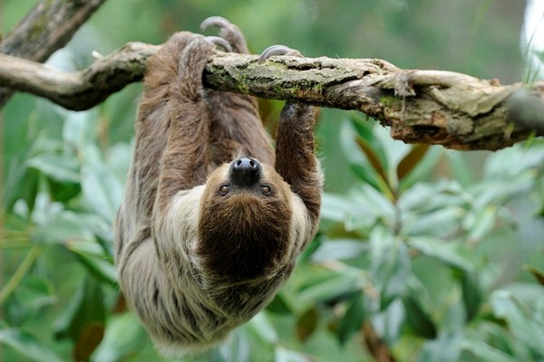
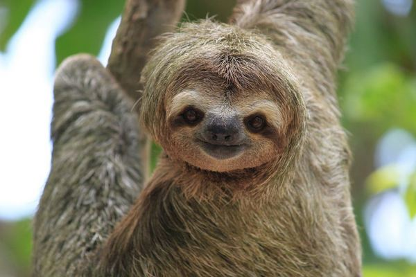
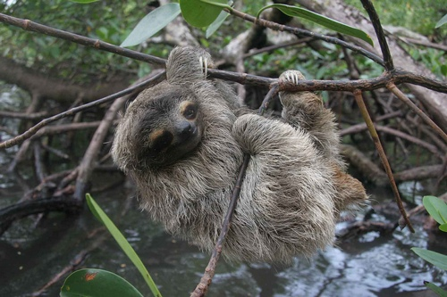

Menu
- Sloth: description and characteristics
- Where the sloth lives
- Types of sloths, photos and names
- Interesting facts about sloths
- Sloth, video
Sloth: description and characteristics
A characteristic feature of the sloth is the presence of special fingers in the form of hooks. The
sloth usually has three fingers, but there are species that have only two. These fingers are not
only for the sake of beauty, they are actually very strong and tenacious, with their help sloths can
easily hang on tree branches, where they spend most of their lives.
Where the sloth lives
| Сontinent | Yes / No |
|---|---|
| South America | Yes |
| North America | No |
| Eurasia | No |
| Africa | No |
| Australia | No |
Interesting facts about sloths
- The body weight of an adult sloth varies from 4 to 9 kg, and the length can reach 60 cm;
- The heart makes 80 beats per minute. The heart occupies 0.3% of the total weight of the individual;
- Compared to the heart, the stomach of this animal is huge. Its weight reaches 30% of the total;
- Feed mainly at night and can live without food for a month;
- Sloths sleep long enough, sometimes 15 hours a day;
- Some species of butterflies always live and lay eggs in the lazy man's fur. For butterflies, the sloth's fur is the so-called "living house".
Types of sloths
- Two-toed sloth
 - Thee-toed sloth
 - Dwarf sloth

Finally, we offer you to watch an interesting documentary video about sloths